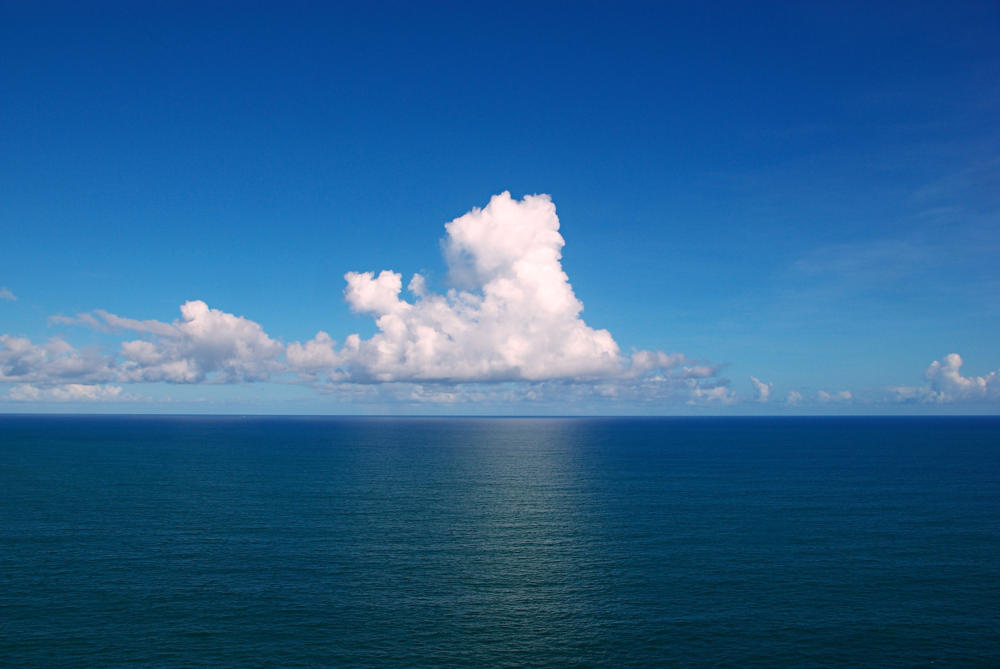

| Clouds Over the Atlantic | |||
|---|---|---|---|
| Sky Blue | Deep Ocean | Cloud White | Horizon Blue |
| #1560A6 | #1B4A6B | #F0F0F0 | #5A98C0 |
| rgb(21, 96, 166) | rgb(27, 74, 107) | rgb(240, 240, 240) | rgb(90, 152, 192) |
| hsl(209, 78%, 37%) | hsl(205, 60%, 26%) | hsl(0, 0%, 94%) | hsl(204, 44%, 55%) |